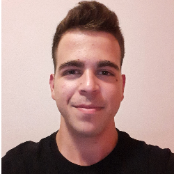

Ιωάννης Λαμπρογιαννάκης
Υπηκοότητα: Ελληνική
Ημερομηνία γέννησης: 16/04/2003
Φύλο: Άντρας
Τηλέφωνο: (+30) 6949729660
eMail: assasink43@gmail.com
Φοιτητής: Τμήμα Διοικητικής Επιστήμης και Τεχνολογίας
Διεύθυνση: Ηράκλειο, Ελλάδα
Λίγα Λόγια Για Μένα
Το όνομά μου είναι Ιωάννης Λαμπρογιαννάκης. Γεννήθηκα και μεγάλωσα στο Ηράκλειο. Από μικρή ηλικία μου άρεσε να ασχολούμαι με τις τέχνες και τα αθλήματα. Είμαι κοινωνικός και μου αρέσει να βοηθάω τους ανθρώπους.
Χόμπι και Ενδιαφέροντα
- • Υπολογιστές: Εμπειρία σε αλλαγή λογισμικού, Format, Backup και συναρμολόγηση υπολογιστών.
- • Γλώσσες προγραμματισμού: Python, HTML, C++
Προσόντα
- Οργάνωση
- Ομαδικότητα
- Συνεργασία
Προϋπηρεσία
- Βοηθός μάγειρα ζεστή κουζίνα 15%
- Βοηθός μάγειρα κρύα κουζίνα 85%
- Βοηθός μπουφέ 39%
- Βοηθός μάζεμα 39%
• Ξενοδοχείο:
- Εμπειρία σε αλλαγή λογισμικού
- Format
- Backup
• Τεχνικός υπολογιστών :
- Μετρήσεις
- Checking